# Configure display settings and suppress chained-assignment warnings
import pandas as pd
import numpy as np
import matplotlib.pyplot as plt
import warnings; warnings.filterwarnings("ignore")
pd.options.mode.chained_assignment = None
plt.rcParams["figure.figsize"] = (8, 4); plt.rcParams["axes.grid"] = True
DATA_DIR = "./data" # change this if CSVs are stored elsewherePharmaDist — Predicting Pharmacy Reorder Timing
Author: (Lê Nhựt Thanh Quang — 25ms23318) | Course: Machine Learning — FPT–FSB
Introduction
PharmaDist is a B2B pharmaceutical distributor selling to ~800 pharmacies. Knowing when a pharmacy will place its next order lets the sales and inventory teams act before the customer churns or runs out of stock — timing a follow-up call, planning stock, or triggering a re-engagement offer.
Business question
When will a pharmacy reorder — and will it reorder within the next 45 days?
We frame this as two complementary tasks on the same observation unit (one order):
| Task | Target | Type | Model | Metrics |
|---|---|---|---|---|
| How soon? | days_until_next_order |
Regression | Linear Regression | MAE, RMSE |
| Will it be soon (≤45 days)? | will_reorder_within_45 |
Classification | Logistic Regression | F1, AUC-ROC |
Per the assignment, only Linear / Logistic Regression are used (no Random Forest, no SHAP); feature importance is read from standardized coefficients.
Data
Seven raw CSV tables — pharmacies, orders, order_lines, products, warehouses, support_tickets, sales_engagements — joined on shared keys. total_amount is not stored; it is computed from order_lines as SUM(quantity × unit_price) with discount_applied. The data is intentionally dirty (~5% missing, ~3% noise: negative quantities, invalid categories such as 'Bitcoin'/'Pigeon', mixed date formats, logical inconsistencies), so cleaning is a graded step.
Approach & pipeline
- EDA — per-table distributions (via one reusable
plot_dist()helper), ERD, and a data-issue inventory. - Cleaning — missing/outlier/invalid-value handling, multi-format date parsing, logical-consistency fixes.
- Integration — join ≥5 tables (LEFT vs INNER contrasted), compute
total_amount. - Target design — labels defined before features, with an observation-horizon rule to avoid right-censoring bias (see §4).
- Feature engineering — RFM, buying behavior, support, engagement, and time features, all computed as-of each order (no leakage).
- Modeling & evaluation — time-based 80/20 split (oldest 80% train, newest 20% test), coefficient-based importance.
- Recommendations & limitations.
Headline results (test set)
- Classification (Logistic): AUC = 0.773, F1 = 0.74; train/test positive rates aligned (0.28 / 0.49) after fixing censoring bias.
- Regression (Linear): MAE = 35 days, 41.9% better than the mean baseline.
0. Setup & Data Loading
Load all 7 raw CSV files from ./data/ into DataFrames. Files use utf-8-sig encoding (BOM present); change DATA_DIR if CSVs are stored elsewhere.
# Load a CSV file into a pandas DataFrame
def load_csv(filename):
filepath = f"{DATA_DIR}/{filename}"
try:
df = pd.read_csv(filepath)
print(f"Loaded {filename} successfully.")
return df
except FileNotFoundError:
print(f"File {filename} not found in {DATA_DIR}.")
return None
# Load all 7 CSV files into a dictionary of DataFrames
pharmacies = load_csv("pharmacies.csv")
orders = load_csv("orders.csv")
order_lines = load_csv("order_lines.csv")
products = load_csv("products.csv")
warehouses = load_csv("warehouses.csv")
tickets = load_csv("support_tickets.csv")
engage = load_csv("sales_engagements.csv")
# Preview first 5 rows
#pharmacies.head(5)
#orders.head(5)
#order_lines.head(5)
#products.head(5)
#warehouses.head(5)
#tickets.head(5)
#engage.head(5)Loaded pharmacies.csv successfully.
Loaded orders.csv successfully.
Loaded order_lines.csv successfully.
Loaded products.csv successfully.
Loaded warehouses.csv successfully.
Loaded support_tickets.csv successfully.
Loaded sales_engagements.csv successfully.1. Data Exploration
# Descriptive statistics function
def data_describe(name, df):
print(f'{name} — shape: {df.shape[0]:,} rows × {df.shape[1]} columns')
num = df.select_dtypes(include='number')
if not num.empty:
print('\n[Numeric statistics]')
print(num.describe().round(2).to_string())
cat = df.select_dtypes(include='object')
if not cat.empty:
print('\n[Categorical statistics]')
print(cat.describe().to_string())
miss = (df.isna().mean()*100).round(1)
miss_nz = {k: v for k, v in miss.items() if v > 0}
print('\nMissing value (%):', miss_nz if miss_nz else 'none')
# Reusable distribution-plot helper — replaces the repeated matplotlib
# boilerplate that was duplicated once per table.
# cat=[...] categorical columns -> vertical bar (value_counts on str)
# barh=[...] categorical columns -> horizontal bar (many categories)
# num=[...] numeric columns -> histogram, clipped at p99 to tame outliers
# extra=[(title, fn)] -> custom panel; fn(ax) draws it
def plot_dist(df, cat=(), num=(), barh=(), extra=(), title="", ncols=4):
specs = ([(c, "cat") for c in cat] + [(c, "barh") for c in barh]
+ [(c, "num") for c in num] + list(extra))
n = len(specs); ncols = min(ncols, n); nrows = int(np.ceil(n / ncols))
fig, axes = plt.subplots(nrows, ncols, figsize=(4 * ncols, 4 * nrows))
axes = np.atleast_1d(axes).ravel()
for ax, (col, kind) in zip(axes, specs):
if callable(kind): # custom panel
kind(ax)
elif kind == "cat":
df[col].astype(str).value_counts().plot(kind="bar", ax=ax,
color="steelblue", edgecolor="white")
ax.tick_params(axis="x", rotation=30)
elif kind == "barh":
df[col].value_counts().plot(kind="barh", ax=ax,
color="steelblue", edgecolor="white")
else: # numeric histogram
v = pd.to_numeric(df[col], errors="coerce")
v.clip(upper=v.quantile(0.99)).dropna().plot(kind="hist", bins=25, ax=ax,
color="coral", edgecolor="white")
ax.set_title(col)
for ax in axes[len(specs):]:
ax.set_visible(False)
fig.suptitle(title, fontsize=12, y=1.02)
fig.tight_layout(); plt.show()1.1. Pharmacies
data_describe("Pharmacies", pharmacies)Pharmacies — shape: 800 rows × 8 columns
[Numeric statistics]
establishment_year
count 767.00
mean 2007.79
std 19.82
min 1800.00
25% 2001.00
50% 2009.00
75% 2017.00
max 2099.00
[Categorical statistics]
pharmacy_id pharmacy_type province region onboarding_date acquisition_channel credit_tier
count 800 755 767 800 800 763 753
unique 800 6 24 3 698 4 3
top PH0001 Nhà thuốc Bình Định Trung 2024-08-03 Sales rep B
freq 1 338 40 280 4 197 340
Missing value (%): {'pharmacy_type': 5.6, 'establishment_year': 4.1, 'province': 4.1, 'acquisition_channel': 4.6, 'credit_tier': 5.9}plot_dist(pharmacies, cat=['pharmacy_type', 'region', 'credit_tier'],
num=['establishment_year'],
title='pharmacies — key column distributions')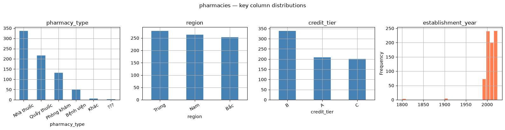
Structure: 800 pharmacies, 8 columns. pharmacy_id has 800 unique values over 800 rows, it is the primary key (no duplicates). region has only 3 levels (North/Central/South), consistent with the “three regions” business context; credit_tier has 3 levels (top = B). province has 24 levels — a high-cardinality column, so only the top ~10 should be plotted, not all of them.
establishment_yearhas outliers (min = 1800, max = 2099) — no pharmacy could be founded in 1800 or 2099.Missing values of 4–6% in five columns (
pharmacy_type5.6%,credit_tier5.9%,acquisition_channel4.6%,establishment_year4.1%,province4.1%)..
onboarding_dateis fully populated (count = 800) whileestablishment_yearis not — internal onboarding records are more complete than self-reported founding years, which is reasonable.
1.2. Orders
data_describe("Orders", orders)Orders — shape: 3,500 rows × 8 columns
[Numeric statistics]
discount_applied
count 3304.00
mean 0.06
std 0.07
min 0.00
25% 0.00
50% 0.05
75% 0.10
max 0.30
[Categorical statistics]
order_id pharmacy_id warehouse_id order_date payment_term payment_method order_status
count 3500 3500 3500 3500 3326 3353 3333
unique 3500 690 25 1812 3 4 4
top O00001 PH0466 W017 2025-11-25 COD Tiền mặt Completed
freq 1 36 161 14 1668 1654 2681
Missing value (%): {'payment_term': 5.0, 'payment_method': 4.2, 'discount_applied': 5.6, 'order_status': 4.8}plot_dist(orders, cat=['order_status', 'payment_term', 'payment_method'],
num=['discount_applied'],
title='orders — key column distributions')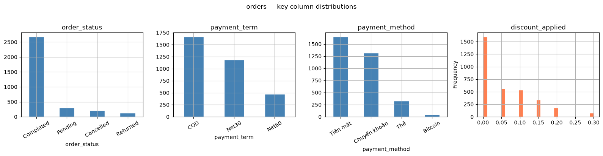
Structure 3,500 orders, 8 columns, order_id has 3,500 unique values, it is primary key.
The
pharmacy_idhas only 690 unique values, but there are 800 pharmacies in the system. This means there are 110 pharmacies (13.75%) have never placed a single order.discount_appliedhas 196 (5.6%) missing values, missing likely means no discount was appliedMissing values of ~4–5% in
payment_term(5.0%),order_status(4.8%), andpayment_method(4.2%).No
total_amountcolumn found, the amount of the order must be derived from ’order_lines`.
1.3. Order Lines
data_describe("Order Lines", order_lines)Order Lines — shape: 7,740 rows × 4 columns
[Numeric statistics]
quantity unit_price
count 7349.0 7357.00
mean 24.6 248023.42
std 16.1 143746.29
min -50.0 9600.00
25% 13.0 119700.00
50% 25.0 244300.00
75% 38.0 371300.00
max 50.0 542400.00
[Categorical statistics]
order_id product_id
count 7740 7740
unique 3500 150
top O00010 P0043
freq 3 71
Missing value (%): {'quantity': 5.1, 'unit_price': 4.9}Negative quantities may indicate returns; however, since the dataset contains no original/reference order to confirm this, we treat negative quantity values as data-entry errors (invalid) and clean them in section 2.
plot_dist(order_lines, num=['quantity', 'unit_price'],
extra=[('lines per order',
lambda ax: order_lines.groupby('order_id').size()
.value_counts().sort_index()
.plot(kind='bar', ax=ax, color='teal', edgecolor='white'))],
title='order_lines — key column distributions', ncols=3)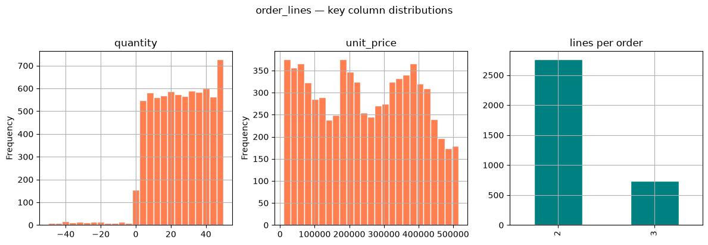
Structure 7,740 rows, 4 columns, the order_id has 3500 unique values (matching the orders table exaclty).
product_idhas 150 unique values, consistent with th product table, mean all products appear in at least one order.quantityhas a minimum of -50, negative values cannot represent valid purchase. Since no retur/credit-note table exist to link them to original order, they are treated as data entry errors.unit_priceis missing for 4.9% of rows
1.4. Products
data_describe("Products", products)Products — shape: 150 rows × 7 columns
[Numeric statistics]
base_price
count 143.00
mean 248454.55
std 142245.90
min 11100.00
25% 121200.00
50% 243100.00
75% 377450.00
max 474200.00
[Categorical statistics]
product_id product_name category sub_category manufacturer drug_type
count 150 150 150 143 143 150
unique 150 150 8 24 8 2
top P0001 Beta-lactam Kháng-001 Kháng sinh Khoáng chất DHG Pharma OTC
freq 1 1 19 9 23 93
Missing value (%): {'sub_category': 4.7, 'manufacturer': 4.7, 'base_price': 4.7}plot_dist(products, barh=['category', 'sub_category'], cat=['drug_type'],
num=['base_price'],
title='products — key column distributions')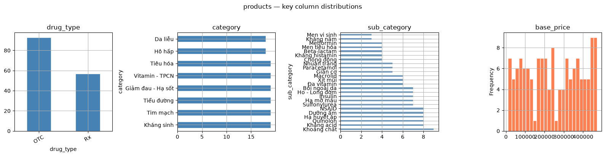
Structure 150 rows, 7 columns, product_id has 150 unique values over 150 rows, it is primary key.
base_pricehas 4.7% missing value.sub_categoryandmanufacturereach have 4.7% missing.
1.5. Warehouse
data_describe("Warehouses", warehouses)Warehouses — shape: 25 rows × 5 columns
[Categorical statistics]
warehouse_id warehouse_name region warehouse_type opened_date
count 25 25 25 24 25
unique 25 25 3 2 25
top W001 Kho Bắc 01 Bắc Vệ tinh 2015-08-13
freq 1 1 9 18 1
Missing value (%): {'warehouse_type': 4.0}plot_dist(warehouses, cat=['region', 'warehouse_type'],
title='warehouses — key column distributions', ncols=2)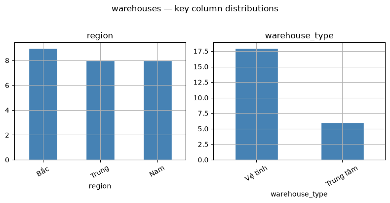
Structure: 25 rows, 5 columns, the smallest table, warehouse_id has 25 unique values over 25 rows, it is primary key.
There are no numeric columns in this table
warehouse_typehas 4.0 missing.
1.6. Support ticket
data_describe("Support Tickets", tickets)Support Tickets — shape: 700 rows × 7 columns
[Numeric statistics]
satisfaction_score
count 490.00
mean 3.04
std 1.55
min -1.00
25% 2.00
50% 3.00
75% 4.00
max 9.00
[Categorical statistics]
ticket_id pharmacy_id created_date channel issue_type resolution_status
count 700 700 700 671 660 700
unique 700 457 587 5 5 3
top T0001 PH0377 2025-11-09 Zalo Công nợ Resolved
freq 1 5 4 183 147 496
Missing value (%): {'channel': 4.1, 'issue_type': 5.7, 'satisfaction_score': 30.0}plot_dist(tickets, barh=['issue_type'], cat=['resolution_status'],
num=['satisfaction_score'],
title='support_tickets — key column distributions', ncols=3)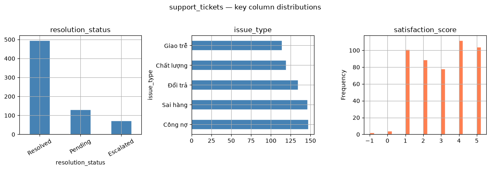
Structure: 700 rows, 7 columns. ticket_id has 700 unique values — it is the primary key
satisfaction_scorehas out-of-range values (min = -1, max = 9).satisfaction_scorehas 210 missing values (30.0% missing).~19 Pending/Escalated tickets that somehow have a score
issue_type5.7% andchannel4.1% missing.
1.7. Sales Engagements
data_describe("Sales Engagements", engage)Sales Engagements — shape: 1,800 rows × 8 columns
[Numeric statistics]
is_ordered offer_value
count 1800.00 1704.00
mean 0.24 610697.77
std 0.42 667882.61
min 0.00 0.00
25% 0.00 0.00
50% 0.00 350500.00
75% 0.00 1181500.00
max 1.00 2000000.00
[Categorical statistics]
engagement_id pharmacy_id contact_date channel engagement_type is_responded
count 1800 1800 1800 1721 1705 1800
unique 1800 715 1226 5 4 4
top E00001 PH0012 2025-06-19 Call Thăm trình dược 1
freq 1 8 6 443 450 939
Missing value (%): {'channel': 4.4, 'engagement_type': 5.3, 'offer_value': 5.3}# is_responded shown raw (mixed types) — before normalization in section 2.4
plot_dist(engage, cat=['engagement_type', 'channel', 'is_responded'],
title='sales_engagements — key column distributions', ncols=3)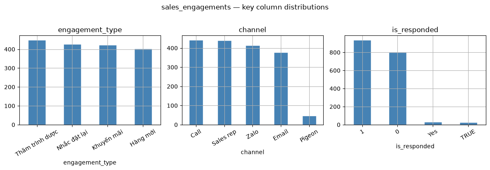
Structure: 1,800 rows, 8 columns. engagement_id has 1,800 unique values, it is the primary key.
is_respondedmixed types, raw values include ‘0’, ‘1’, ‘Yes, ’TRUE’.is_orderedvsis_responded**: ~41 rows haveis_ordered=1butis_responded=0, which is impossible, a pharmacy cannot place an order without first responding to engagement.offer_valuehas 5.3% missing and a minimum of 0.channel4.4% andengagement_type5.3% missing
1.8. Table Relationships (Join Keys)
pharmacies sits at the center of the schema — every order, support ticket, and sales engagement belongs to one pharmacy via pharmacy_id. orders is the second hub: each order links to its product lines (order_lines → products) and its warehouses record. Tickets and engagements connect only to pharmacies, not to orders directly — they feed the model as pharmacy-level counts computed before each order’s date (§5.2–5.3).
Main join keys: - pharmacies (1) —— (N) orders via pharmacy_id - orders (1) —— (N) order_lines via order_id - order_lines (N) —— (1) products via product_id - orders (N) —— (1) warehouses via warehouse_id - pharmacies (1) —— (N) support_tickets via pharmacy_id - pharmacies (1) —— (N) sales_engagements via pharmacy_id
1.9. Data Issues Found
- Missing values: ~4–6% missing across most categorical/numeric columns in all 7 tables.
- Mixed date formats: date columns across 5 tables use inconsistent formats (
YYYY-MM-DD,DD/MM/YYYY,DD-MM-YYYY,MM-DD-YYYY). establishment_yearoutliers: ~12 rows contain impossible years (e.g. 1800, 2099).quantity≤ 0 inorder_lines: ~157 rows with zero or negative quantity.unit_pricemissing inorder_lines: ~383 rows have no price (no invalid values, only NaN).is_respondedmixed types: values include ‘0’, ‘1’, ‘Yes’, ‘TRUE’ — not a consistent boolean.- Logic violation —
is_orderedvsis_responded: ~41 rows haveis_ordered=1butis_responded=0, which is impossible. - Logic violation —
satisfaction_scoreon unresolved tickets: ~19 Pending/Escalated tickets have a score, which shouldn’t exist yet. satisfaction_scoreout of range: values −1, 0, 7, 9 fall outside the valid [1–5] scale.- Invalid categorical values:
pharmacy_type(12 rows: ‘Khác’, ‘???’),payment_method(50 rows: ‘Bitcoin’),channelin tickets (14 rows: ‘Pigeon’),channelin engagements (46 rows: ‘Pigeon’) — nullified via whitelist, NaN handled byget_dummies(dummy_na=True)in modeling. - No
total_amountcolumn inorders: revenue must be derived fromorder_lines. - Censoring: 110 pharmacies never placed any order; 118 placed exactly one order — label assignment is non-trivial for these.
2. Data Cleaning
2.1 Date Parsing
Date columns across five tables use inconsistent formats (YYYY-MM-DD, DD/MM/YYYY, DD-MM-YYYY, MM-DD-YYYY). parse_date tries ISO format first, then fills remaining NaT values with each fallback format in order.
def parse_date(s):
out = pd.to_datetime(s, format='%Y-%m-%d', errors='coerce')
for fmt in ['%d/%m/%Y', '%d-%m-%Y', '%m-%d-%Y']:
out = out.fillna(pd.to_datetime(s, format=fmt, errors='coerce'))
return out# Show raw format variety across the 4 date columns
orders['order_date'] = parse_date(orders['order_date'])
pharmacies['onboarding_date'] = parse_date(pharmacies['onboarding_date'])
tickets['created_date'] = parse_date(tickets['created_date'])
engage['contact_date'] = parse_date(engage['contact_date'])
warehouses['opened_date'] = parse_date(warehouses['opened_date'])
print('NaT in order_date after parsing:', orders['order_date'].isna().sum())NaT in order_date after parsing: 02.2 Outliers & Invalid Values
Issues from 1.8 addressed here: - establishment_year values outside [1950, 2025] are treated as invalid and set to NaN. - quantity values less than or equal to 0 in order_lines are invalid and set to NaN. - satisfaction_score values outside the valid range [1–5] are set to NaN.
# --- establishment_year: outside [1950, 2025] → NaN ---
pharmacies['establishment_year'] = pd.to_numeric(pharmacies['establishment_year'], errors='coerce')
mask = pharmacies['establishment_year'].notna() & ~pharmacies['establishment_year'].between(1950, 2025)
print(f'establishment_year outliers: {mask.sum()} rows') # expect ~12
pharmacies.loc[mask, 'establishment_year'] = None
# --- quantity: <= 0 → NaN ---
order_lines['quantity'] = pd.to_numeric(order_lines['quantity'], errors='coerce')
mask = order_lines['quantity'] <= 0
print(f'quantity <= 0: {mask.sum()} rows') # expect ~157
order_lines.loc[mask, 'quantity'] = None
# --- satisfaction_score: outside [1, 5] → NaN ---
tickets['satisfaction_score'] = pd.to_numeric(tickets['satisfaction_score'], errors='coerce')
mask = tickets['satisfaction_score'].notna() & ~tickets['satisfaction_score'].between(1, 5)
print(f'satisfaction_score out of [1-5]: {mask.sum()} rows') # expect ~11
tickets.loc[mask, 'satisfaction_score'] = Noneestablishment_year outliers: 12 rows
quantity <= 0: 157 rows
satisfaction_score out of [1-5]: 11 rowsInvalid categorical values are cleaned using a whitelist approach: any non-null value not in the approved set is set to NaN (the row is kept — only that cell is nullified). Three columns are affected:
pharmacy_type— only confirmed establishment types are valid (Nhà thuốc, Quầy thuốc, Phòng khám, Bệnh viện). Entries'???'and'Khác'are set to NaN.payment_method— only Tiền mặt, Chuyển khoản, and Thẻ are valid B2B payment methods.'Bitcoin'is not an accepted instrument in this context.channel(tickets & engagements) — Zalo, Call, Email, and Sales rep are the recognised channels.'Pigeon'is nonsensical and treated as a corrupt entry.
NaN produced here is intentional and requires no further imputation: get_dummies(dummy_na=True) in Section 6.1 treats NaN as its own category, so no row information is lost.
Whitelist calibration rule: invalid values almost always have very low frequency relative to the valid categories in the same column. A flagged value accounting for more than ~5% of non-null rows is a strong warning sign that the whitelist is incomplete — always verify with value_counts() before finalising which entries to nullify.
def clean_categorical(df, col, valid_values, label):
mask = df[col].notna() & ~df[col].isin(valid_values)
n = mask.sum()
print(f"{label}.{col}: {n} invalid rows found")
if n > 0:
print(df.loc[mask, col].value_counts().to_string())
df.loc[mask, col] = None
return df
# Whitelists contain only values confirmed present in the data via value_counts().
# Calibration rule: a flagged value with > ~5% frequency among non-null rows is a
# strong signal the whitelist is wrong — cross-check value_counts() before finalising.
VALID_PHARMACY_TYPE = {'Nhà thuốc', 'Quầy thuốc', 'Phòng khám', 'Bệnh viện'}
VALID_PAYMENT_METHOD = {'Tiền mặt', 'Chuyển khoản', 'Thẻ'}
VALID_TICKET_CHANNEL = {'Zalo', 'Call', 'Email', 'Sales rep'}
VALID_ENGAGE_CHANNEL = {'Call', 'Email', 'Zalo', 'Sales rep'}
pharmacies = clean_categorical(pharmacies, 'pharmacy_type', VALID_PHARMACY_TYPE, 'pharmacies')
orders = clean_categorical(orders, 'payment_method', VALID_PAYMENT_METHOD, 'orders')
tickets = clean_categorical(tickets, 'channel', VALID_TICKET_CHANNEL, 'tickets')
engage = clean_categorical(engage, 'channel', VALID_ENGAGE_CHANNEL, 'engage')pharmacies.pharmacy_type: 12 invalid rows found
pharmacy_type
Khác 7
??? 5
orders.payment_method: 50 invalid rows found
payment_method
Bitcoin 50
tickets.channel: 14 invalid rows found
channel
Pigeon 14
engage.channel: 46 invalid rows found
channel
Pigeon 462.3 Impute Missing Values
For unit_price, missing values are backfilled from products.base_price — the manufacturer’s list price is the most accurate proxy available. Any rows still missing after the backfill are filled with the column median as a last resort.
quantity and establishment_year are both filled with their respective column medians, representing the most typical value in each distribution.
discount_applied is filled with 0, since a missing discount record most likely means no discount was applied.
Categorical columns such as pharmacy_type, credit_tier, payment_method, and others are left as NaN intentionally. In the modeling step, get_dummies(dummy_na=True) will treat NaN as its own category, so no information is lost.
satisfaction_score is explicitly not imputed — for Pending and Escalated tickets the score does not exist yet, and filling it would fabricate a signal that was never recorded.
# --- unit_price: backfill from products.base_price, then median ---
price_map = products.set_index('product_id')['base_price']
order_lines['unit_price'] = order_lines['unit_price'].fillna(
order_lines['product_id'].map(price_map)
)
med_price = order_lines['unit_price'].median()
order_lines['unit_price'] = order_lines['unit_price'].fillna(med_price)
print(f'unit_price remaining NaN: {order_lines["unit_price"].isna().sum()}')
# --- quantity: median ---
med_qty = order_lines['quantity'].median()
order_lines['quantity'] = order_lines['quantity'].fillna(med_qty)
print(f'quantity remaining NaN: {order_lines["quantity"].isna().sum()}')
# --- establishment_year: median ---
med_yr = pharmacies['establishment_year'].median()
pharmacies['establishment_year'] = pharmacies['establishment_year'].fillna(med_yr)
print(f'establishment_year remaining NaN: {pharmacies["establishment_year"].isna().sum()}')
# --- discount_applied: 0 (missing = no discount) ---
orders['discount_applied'] = pd.to_numeric(orders['discount_applied'], errors='coerce').fillna(0)
print(f'discount_applied remaining NaN: {orders["discount_applied"].isna().sum()}')
# --- summary ---
print('\nRemaining NaN (intentional or handled by dummy_na in modeling):')
for name, df in [('pharmacies', pharmacies), ('orders', orders),
('order_lines', order_lines), ('tickets', tickets), ('engage', engage)]:
miss = df.isnull().sum().sum()
if miss: print(f' {name}: {miss} NaN')unit_price remaining NaN: 0
quantity remaining NaN: 0
establishment_year remaining NaN: 0
discount_applied remaining NaN: 0
Remaining NaN (intentional or handled by dummy_na in modeling):
pharmacies: 174 NaN
orders: 538 NaN
tickets: 304 NaN
engage: 316 NaN2.4 Logic Constraints
Three logic violations identified in 1.8: 1. is_responded has mixed types → normalize to binary 0/1 2. is_ordered=1 but is_responded=0 is impossible → fix is_ordered=0 3. Pending/Escalated tickets cannot have a satisfaction_score → set NaN
# --- is_responded: normalize mixed types to 0/1 ---
engage['is_responded'] = (
engage['is_responded'].astype(str).str.strip().str.lower()
.isin(['1', 'yes', 'true'])
.astype(int)
)
engage['is_ordered'] = (
engage['is_ordered'].astype(str).str.strip().str.lower()
.isin(['1', 'yes', 'true'])
.astype(int)
)
print(f'is_responded values: {sorted(engage["is_responded"].unique())}')
# --- Logic: is_ordered <= is_responded (can't order without responding) ---
viol = (engage['is_ordered'] == 1) & (engage['is_responded'] == 0)
print(f'is_ordered=1 but is_responded=0: {viol.sum()} rows → fix is_ordered=0')
engage.loc[viol, 'is_ordered'] = 0
# --- Logic: Pending/Escalated tickets must have no satisfaction_score ---
mask = tickets['resolution_status'].isin(['Pending', 'Escalated']) & tickets['satisfaction_score'].notna()
print(f'Pending/Escalated with score: {mask.sum()} rows → set NaN')
tickets.loc[mask, 'satisfaction_score'] = None
print('\n2.4 done — all logic constraints enforced.')is_responded values: [np.int64(0), np.int64(1)]
is_ordered=1 but is_responded=0: 41 rows → fix is_ordered=0
Pending/Escalated with score: 19 rows → set NaN
2.4 done — all logic constraints enforced.2.5 Post-Cleaning Verification Plots
Check distributions of cleaned columns — confirm no outliers, valid ranges, and normalized booleans.
fig, axes = plt.subplots(2, 3, figsize=(15, 8))
# 1. establishment_year — should be within [1950, 2025]
pharmacies['establishment_year'].plot(kind='hist', bins=20, ax=axes[0,0],
color='steelblue', edgecolor='white')
axes[0,0].set_title('establishment_year (after cleaning)')
axes[0,0].axvline(1950, color='red', linestyle='--', label='min 1950')
axes[0,0].axvline(2025, color='red', linestyle='--', label='max 2025')
axes[0,0].legend(fontsize=8)
# 2. quantity — should be all > 0
order_lines['quantity'].clip(upper=order_lines['quantity'].quantile(0.99)).plot(
kind='hist', bins=30, ax=axes[0,1], color='steelblue', edgecolor='white')
axes[0,1].set_title('quantity (after cleaning, clipped p99)')
# 3. unit_price — should be all > 0, no NaN
order_lines['unit_price'].clip(upper=order_lines['unit_price'].quantile(0.99)).plot(
kind='hist', bins=30, ax=axes[0,2], color='coral', edgecolor='white')
axes[0,2].set_title('unit_price (after cleaning, clipped p99)')
# 4. satisfaction_score — should be only 1–5
tickets['satisfaction_score'].dropna().plot(
kind='hist', bins=5, ax=axes[1,0], color='coral', edgecolor='white')
axes[1,0].set_title('satisfaction_score (after cleaning)')
axes[1,0].set_xticks([1, 2, 3, 4, 5])
# 5. is_responded — should be only 0 and 1
engage['is_responded'].value_counts().sort_index().plot(
kind='bar', ax=axes[1,1], color='teal', edgecolor='white')
axes[1,1].set_title('is_responded (normalized)')
axes[1,1].set_xticklabels(['0', '1'], rotation=0)
# 6. Before vs After: NaN/invalid counts for cleaned columns
cols = ['establishment_year', 'quantity', 'unit_price', 'satisfaction_score\n(invalid)']
before = [45, 548, 383, 11] # from 2.2 / 2.3 analysis
after = [
pharmacies['establishment_year'].isna().sum(),
order_lines['quantity'].isna().sum(),
order_lines['unit_price'].isna().sum(),
int((tickets['satisfaction_score'].notna() & ~tickets['satisfaction_score'].between(1,5)).sum())
]
x = range(len(cols))
axes[1,2].bar([i - 0.2 for i in x], before, width=0.4, label='Before', color='salmon', edgecolor='white')
axes[1,2].bar([i + 0.2 for i in x], after, width=0.4, label='After', color='steelblue', edgecolor='white')
axes[1,2].set_xticks(list(x))
axes[1,2].set_xticklabels(cols, fontsize=8)
axes[1,2].set_title('NaN / invalid: Before vs After cleaning')
axes[1,2].legend()
plt.tight_layout()
plt.show()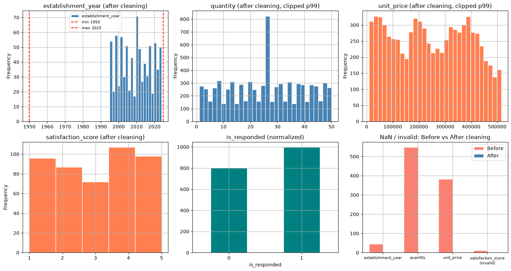
3. Data Integration
Goal: JOIN at least 5/7 files and compute total_amount per order. JOIN type is chosen based on whether we want to keep unmatched rows:
- INNER JOIN — used when both sides must exist (e.g.
order_lines×products: we need a valid price/category to compute line totals). - LEFT JOIN — used everywhere else to preserve all rows on the left side (e.g. keeping all pharmacies even if they never ordered, keeping all orders even if a ticket or engagement is missing).
3.1 Compute total_amount per Order
total_amount does not exist in the raw orders table and must be derived from order_lines. Each line total is quantity × unit_price, then the order total applies the discount: total_amount = Σ(line_total) × (1 − discount_applied). An INNER JOIN with products is used here because we need a valid price and category for every line — rows without a matching product are unusable.
# INNER JOIN: order_lines × products (need valid price & category per line)
lines = order_lines.merge(products[['product_id', 'category', 'drug_type']], on='product_id', how='inner')
lines['line_total'] = lines['quantity'] * lines['unit_price']
# Aggregate to order level
order_totals = lines.groupby('order_id')['line_total'].sum().reset_index()
order_totals.rename(columns={'line_total': 'gross_total'}, inplace=True)
# LEFT JOIN totals onto orders (broken orders → gross_total = NaN → treat as 0)
orders = orders.merge(order_totals, on='order_id', how='left')
orders['gross_total'] = orders['gross_total'].fillna(0)
# Apply discount (clip to [0, 0.9] to avoid nonsensical values)
orders['discount_applied'] = orders['discount_applied'].clip(0, 0.9)
orders['total_amount'] = orders['gross_total'] * (1 - orders['discount_applied'])
print(f'orders shape: {orders.shape}')
print(f'total_amount — min: {orders["total_amount"].min():,.0f} '
f'median: {orders["total_amount"].median():,.0f} '
f'max: {orders["total_amount"].max():,.0f}')orders shape: (3500, 10)
total_amount — min: 225,165 median: 12,071,338 max: 47,293,0003.2 Attach Warehouse Info to Orders
A LEFT JOIN is used so that every order is kept, even if its warehouse_id is missing or unmatched.
# LEFT JOIN: orders ← warehouses
orders = orders.merge(
warehouses[['warehouse_id', 'warehouse_name', 'warehouse_type']],
on='warehouse_id', how='left'
)
print(f'orders shape after warehouse join: {orders.shape}')orders shape after warehouse join: (3500, 12)3.3 Build Master Table
The master table is built around orders as the observation unit — each row represents one order, which is the natural unit for predicting days until next order and will reorder within 45 days. A LEFT JOIN from orders onto pharmacies keeps all 3,500 orders and attaches each pharmacy’s profile; orders is the left table, so every order is preserved regardless of whether the pharmacy profile is fully populated.
Note on 110 never-ordered pharmacies: Because the master table is order-centric, the 110 pharmacies that never placed any order have no row to anchor onto and are absent from this table. This is appropriate for the prediction task — there is nothing to forecast for a pharmacy with no purchase history — but it means the model cannot score this segment. This limitation is acknowledged in Section 7.3.
Ticket and engagement counts are aggregated and joined the same way, so a pharmacy with no tickets simply gets a count of 0.
# LEFT JOIN: orders ← pharmacies profile
master = orders.merge(
pharmacies[['pharmacy_id', 'pharmacy_type', 'region', 'establishment_year',
'onboarding_date', 'credit_tier']],
on='pharmacy_id', how='left'
)
# LEFT JOIN: aggregate ticket count per pharmacy
ticket_counts = tickets.groupby('pharmacy_id').size().reset_index(name='n_tickets')
master = master.merge(ticket_counts, on='pharmacy_id', how='left')
master['n_tickets'] = master['n_tickets'].fillna(0)
# LEFT JOIN: aggregate engagement count per pharmacy
engage_counts = engage.groupby('pharmacy_id').size().reset_index(name='n_engagements')
master = master.merge(engage_counts, on='pharmacy_id', how='left')
master['n_engagements'] = master['n_engagements'].fillna(0)
print(f'master shape: {master.shape}')
print(f'files joined: orders, order_lines, products, warehouses, pharmacies, tickets, engage — 7/7')
master.head(3)master shape: (3500, 19)
files joined: orders, order_lines, products, warehouses, pharmacies, tickets, engage — 7/7| order_id | pharmacy_id | warehouse_id | order_date | payment_term | payment_method | discount_applied | order_status | gross_total | total_amount | warehouse_name | warehouse_type | pharmacy_type | region | establishment_year | onboarding_date | credit_tier | n_tickets | n_engagements | |
|---|---|---|---|---|---|---|---|---|---|---|---|---|---|---|---|---|---|---|---|
| 0 | O00001 | PH0001 | W001 | 2022-05-10 | Net30 | Chuyển khoản | 0.05 | Completed | 2504900.0 | 2379655.0 | Kho Bắc 01 | Trung tâm | Quầy thuốc | Nam | 2017.0 | 2021-03-18 | C | 1.0 | 1.0 |
| 1 | O00002 | PH0001 | W015 | 2025-05-06 | COD | Tiền mặt | 0.00 | Completed | 19600800.0 | 19600800.0 | Kho Nam 15 | Vệ tinh | Quầy thuốc | Nam | 2017.0 | 2021-03-18 | C | 1.0 | 1.0 |
| 2 | O00003 | PH0001 | W022 | 2022-04-04 | COD | Tiền mặt | 0.30 | Completed | 17941500.0 | 12559050.0 | Kho Bắc 22 | Vệ tinh | Quầy thuốc | Nam | 2017.0 | 2021-03-18 | C | 1.0 | 1.0 |
4. Target Label Design
Labels are defined before features to maintain a clear past-vs-future boundary.
Observation unit = one order. For each order we look forward to the same pharmacy’s next order:
days_until_next_order— days from this order to the next order (regression target).will_reorder_within_45— 1 if the pharmacy reorders within 45 days, else 0 (classification target).
Censoring — why a naïve label is biased
Our data ends at a fixed cut-off, SNAP = max(order_date). After SNAP we know nothing. To decide “did this order lead to a reorder within 45 days?” we must be able to observe the full 45-day window.
Consider an order placed 11 days before SNAP that has not reordered yet. Labelling it 0 (“will not reorder”) is a guess — the pharmacy may well reorder next week, inside the 45-day window, we simply haven’t seen it. Because these under-observed orders are all the most recent ones, and the time-based split puts the newest 20% into the test set, labelling them 0 systematically inflates the test-set positive rate — an artefact of censoring, not a real trend.
Observation-horizon rule — three cases:
- Reorder already seen within ≤45 days → label 1. Certain, regardless of how close to
SNAP. - No reorder seen AND the 45-day window has fully elapsed (
order_date ≤ SNAP − 45) → label 0. Certain “no”. - No reorder seen AND the window has not elapsed (
order_date > SNAP − 45) → NaN, excluded. We cannot know yet, so we do not guess.
This keeps the labelling rule identical at every point in time, so the train and test sets share the same label distribution and the model is evaluated fairly.
is_censored— last order of a pharmacy (no next order at all); still excluded from regression.- Pharmacies with only 1 order are fully censored (no regression sample).
# Snapshot / cut-off: the last date we have any data for
SNAP = master['order_date'].max()
HORIZON = 45 # days
# Sort by pharmacy and time — required for shift(-1) to find the next order
df = master.dropna(subset=['order_date']).sort_values(['pharmacy_id', 'order_date']).copy()
# Next order date for each order (within the same pharmacy)
df['next_order_date'] = df.groupby('pharmacy_id')['order_date'].shift(-1)
# Regression target: days until next order
df['days_until_next_order'] = (df['next_order_date'] - df['order_date']).dt.days
# Censoring flag: last order of a pharmacy has no next order at all
df['is_censored'] = df['next_order_date'].isna()
# --- Classification target: observation-horizon rule (3 cases) ---
reordered_le_45 = df['days_until_next_order'] <= HORIZON # case 1: reorder seen in window -> 1
window_elapsed = df['order_date'] <= (SNAP - pd.Timedelta(days=HORIZON)) # full 45d observed?
df['will_reorder_within_45'] = np.nan # case 3 default: unknown -> NaN
df.loc[reordered_le_45, 'will_reorder_within_45'] = 1.0 # case 1
df.loc[~reordered_le_45 & window_elapsed, 'will_reorder_within_45'] = 0.0 # case 2
# Report
n_unknown = df['will_reorder_within_45'].isna().sum()
print(f'SNAP (cut-off date) : {SNAP.date()} | horizon = {HORIZON} days')
print(f'Total orders : {len(df)}')
print(f'Censored orders (last order) : {df["is_censored"].sum()}')
print(f'Pharmacies with 1 order only : {(df.groupby("pharmacy_id").size() == 1).sum()}')
print(f'Labelled (usable for clf) : {df["will_reorder_within_45"].notna().sum()}')
print(f' -> dropped as under-observed (case 3, NaN): {n_unknown}')
print(f'\nwill_reorder_within_45 distribution:')
print(df['will_reorder_within_45'].value_counts(dropna=False))
print(f'Overall positive rate : {df["will_reorder_within_45"].mean():.3f}')
print(f'\ndays_until_next_order (regression target):')
print(df['days_until_next_order'].describe().round(1))SNAP (cut-off date) : 2025-12-31 | horizon = 45 days
Total orders : 3500
Censored orders (last order) : 690
Pharmacies with 1 order only : 118
Labelled (usable for clf) : 3350
-> dropped as under-observed (case 3, NaN): 150
will_reorder_within_45 distribution:
will_reorder_within_45
0.0 2296
1.0 1054
NaN 150
Name: count, dtype: int64
Overall positive rate : 0.315
days_until_next_order (regression target):
count 2810.0
mean 138.7
std 183.4
min 0.0
25% 26.0
50% 73.0
75% 170.0
max 1740.0
Name: days_until_next_order, dtype: float64fig, ax = plt.subplots(1, 3, figsize=(16, 4))
# (a) days_until_next_order distribution
df['days_until_next_order'].dropna().clip(0, 365).plot(
kind='hist', bins=40, ax=ax[0], color='steelblue', edgecolor='white')
ax[0].axvline(45, color='red', linestyle='--', label='45-day horizon')
ax[0].set_title('days_until_next_order (clipped at 365)')
ax[0].set_xlabel('Days'); ax[0].legend()
# (b) class balance of the labelled classification target
df['will_reorder_within_45'].value_counts().sort_index().plot(
kind='bar', ax=ax[1], color=['salmon', 'steelblue'], edgecolor='white')
ax[1].set_title('will_reorder_within_45 — class balance')
ax[1].set_xticklabels(['0 (No)', '1 (Yes)'], rotation=0); ax[1].set_ylabel('Count')
# (c) positive rate across time quintiles — should be STABLE after the fix
lab = df.dropna(subset=['will_reorder_within_45']).copy()
lab['time_q'] = pd.qcut(lab['order_date'].astype('int64'), 5, labels=[f'Q{i}' for i in range(1, 6)])
lab.groupby('time_q', observed=True)['will_reorder_within_45'].mean().plot(
kind='bar', ax=ax[2], color='teal', edgecolor='white')
ax[2].set_title('Positive rate by time quintile\n(gradual real trend — no artefactual jump)')
ax[2].set_ylabel('P(reorder ≤ 45d)'); ax[2].tick_params(axis='x', rotation=0)
plt.tight_layout(); plt.show()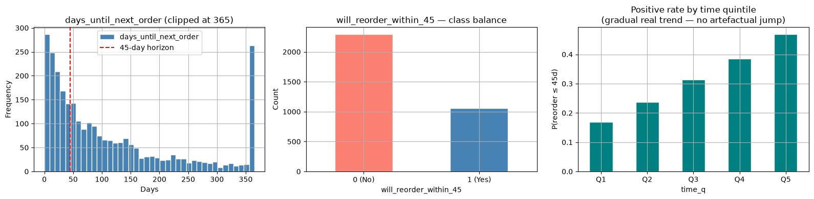
5. Feature Engineering
Features are grouped by the business signal they capture. All are computed as-of each order’s order_date — only data available strictly before that date is used, enforced by a leakage-guard assertion at the end of this section.
Why these groups?
- RFM — A pharmacy’s own purchase history is the strongest predictor of its next purchase. How recently it ordered, how often, and how much it spends together describe its reorder rhythm better than any external signal.
- Purchase behavior — The composition of each order (number of product lines, product categories, Rx vs OTC ratio, discount usage) reflects the pharmacy’s sourcing strategy and dependency on this distributor.
- Support tickets — Complaints are a leading indicator of churn risk. A pharmacy actively raising issues is less likely to reorder quickly; resolution rate and satisfaction score indicate whether those issues were resolved to the customer’s satisfaction.
- Sales engagements — Proactive outreach by the sales team directly influences reorder timing. Response rate and conversion rate (engagement → order) measure how receptive each pharmacy is to sales contact.
- Time / profile — Seasonality (
month,day_of_week), account age (tenure_days,onboarding_tenure_days), and static profile attributes (region,credit_tier,pharmacy_type) provide context that modulates all the behavioral signals above.
| Group | Features |
|---|---|
| RFM | recency_since_prev, order_seq, cum_monetary, avg_monetary |
| Purchase behavior | discount_applied, n_lines, total_amount, n_categories, pct_rx |
| Support | n_tickets_before, resolve_rate_before, avg_satisfaction_before, n_late_before |
| Marketing | n_engage_before, n_resp_before, resp_rate_before, order_rate_before, offer_value_before |
| Time / profile | tenure_days, onboarding_tenure_days, month, day_of_week, establishment_year, pharmacy_type, region, credit_tier |
5.1 RFM Features (as-of)
RFM (Recency, Frequency, Monetary) is a classical framework for characterizing customer purchase behavior. Its three dimensions are chosen here because they jointly describe when a pharmacy is likely to reorder:
recency_since_prev(Recency) — Days since the pharmacy’s previous order. A short gap suggests the pharmacy is in an active buying cycle; a gap already exceeding its own historical average signals it may be drifting dormant. This is the single most direct predictor of time-to-next-order.order_seq(Frequency) — Cumulative number of orders placed up to this point. High-frequency buyers have established, predictable reorder cadences that the model can learn. First- or second-time buyers have far less history, making their next order harder to forecast.cum_monetaryandavg_monetary(Monetary) — Cumulative and average spend. High-spending pharmacies tend to have structured procurement relationships (regular delivery schedules, negotiated terms), making their behavior more regular. A sudden drop inavg_monetaryrelative to history can also indicate disengagement.tenure_days— Days since the pharmacy’s very first order. Longer-tenured customers have more data points for the model to learn from, and their patterns are more stable than new customers who may still be experimenting with order size and frequency.month— Captures seasonal demand cycles (e.g. flu season, year-end budget spending) that shift reorder timing across the whole customer base.n_lines— Number of product lines in the current order. Complex multi-SKU orders indicate a pharmacy that relies on this distributor as a primary supplier, which correlates with shorter inter-order intervals.
# Recency: days since the previous order by the same pharmacy
df['prev_order_date'] = df.groupby('pharmacy_id')['order_date'].shift(1)
df['recency_since_prev'] = (df['order_date'] - df['prev_order_date']).dt.days
# Frequency: cumulative order count up to this order
df['order_seq'] = df.groupby('pharmacy_id').cumcount() + 1
# Monetary: cumulative and average spend up to this order
df['cum_monetary'] = df.groupby('pharmacy_id')['total_amount'].cumsum()
df['avg_monetary'] = df['cum_monetary'] / df['order_seq']
# Tenure: days since the pharmacy's very first order
df['tenure_days'] = (
df['order_date'] - df.groupby('pharmacy_id')['order_date'].transform('min')
).dt.days
# Month: seasonality signal
df['month'] = df['order_date'].dt.month
# Lines per order: order complexity
n_lines = order_lines.groupby('order_id').size().rename('n_lines')
df = df.merge(n_lines, on='order_id', how='left')
df['n_lines'] = df['n_lines'].fillna(0)
print('RFM features computed.')
print(df[['recency_since_prev','order_seq','cum_monetary','avg_monetary','tenure_days']].describe().round(1))RFM features computed.
recency_since_prev order_seq cum_monetary avg_monetary tenure_days
count 2810.0 3500.0 3500.0 3500.0 3500.0
mean 138.7 4.8 64737039.8 13440856.5 394.9
std 183.4 4.3 59774317.0 5135293.0 422.9
min 0.0 1.0 386410.0 386410.0 0.0
25% 26.0 2.0 23343472.5 10424297.1 41.8
50% 73.0 4.0 48098030.0 13077225.9 258.5
75% 170.0 7.0 88758403.8 16018264.4 604.0
max 1740.0 36.0 541519660.0 43724100.0 2157.05.2 Support Ticket Features (as-of)
Support tickets reflect the friction a pharmacy experiences with the distributor. Four features are derived, all filtered to tickets created strictly before the order date:
n_tickets_before— Total complaint count. A pharmacy that raises many issues is signaling dissatisfaction; more tickets predict longer gaps before the next order.resolve_rate_before— Proportion of past tickets that were Resolved. If past complaints were handled well, the pharmacy’s trust is partially restored, making a faster reorder more likely.avg_satisfaction_before— Mean satisfaction score across resolved tickets before this order. A higher score directly reflects the quality of the relationship up to this point.n_late_before— Count of tickets related to late or delayed delivery. Delivery reliability is a key switching factor in B2B pharma; repeated late complaints are a strong churn signal independent of overall ticket volume.
All four use strict created_date < order_date filtering. The leakage guard at Section 5.4 verifies this.
tk_full = tickets.dropna(subset=['created_date'])[
['pharmacy_id', 'created_date', 'resolution_status', 'satisfaction_score', 'issue_type']
]
merged_tk = df[['order_id', 'pharmacy_id', 'order_date']].merge(
tk_full, on='pharmacy_id', how='left'
)
merged_tk['before'] = merged_tk['created_date'] < merged_tk['order_date']
def ticket_agg(g):
b = g[g['before'] == True]
n = len(b)
resolved = (b['resolution_status'] == 'Resolved').sum()
avg_sat = b['satisfaction_score'].mean()
n_late = b['issue_type'].str.contains('giao|trễ|chậm|delay', case=False, na=False).sum()
return pd.Series({
'n_tickets_before' : n,
'resolve_rate_before' : resolved / n if n > 0 else 0,
'avg_satisfaction_before' : avg_sat,
'n_late_before' : n_late
})
tk_agg = merged_tk.groupby('order_id').apply(ticket_agg).reset_index()
df = df.merge(tk_agg, on='order_id', how='left')
df['n_tickets_before'] = df['n_tickets_before'].fillna(0)
df['resolve_rate_before'] = df['resolve_rate_before'].fillna(0)
df['avg_satisfaction_before'] = df['avg_satisfaction_before'].fillna(df['avg_satisfaction_before'].median())
df['n_late_before'] = df['n_late_before'].fillna(0)
print('Support ticket features computed.')
print(df[['n_tickets_before','resolve_rate_before','avg_satisfaction_before','n_late_before']].describe().round(2))Support ticket features computed.
n_tickets_before resolve_rate_before avg_satisfaction_before \
count 3500.00 3500.00 3500.00
mean 0.48 0.24 2.98
std 0.75 0.42 0.70
min 0.00 0.00 1.00
25% 0.00 0.00 3.00
50% 0.00 0.00 3.00
75% 1.00 0.50 3.00
max 4.00 1.00 5.00
n_late_before
count 3500.00
mean 0.09
std 0.28
min 0.00
25% 0.00
50% 0.00
75% 0.00
max 2.00 5.3 Sales Engagement Features (as-of)
Sales engagements capture the distributor’s proactive effort to retain each pharmacy. Five features are derived, all filtered to engagements with contact_date strictly before the order date:
n_engage_before— Total number of sales touchpoints (calls, visits, messages). Higher contact volume reflects the sales team’s attention to this account, and may independently accelerate reorder decisions.n_resp_before— Number of engagements the pharmacy actually responded to. Response is a stronger signal than contact volume alone — a pharmacy that engages back is more receptive.resp_rate_before— Response rate (n_resp / n_engage). Normalizes for contact frequency; a pharmacy contacted 10 times and responding 8 times is very different from one contacted twice and responding once.order_rate_before— Proportion of engagements that led to an order (is_ordered = 1). Measures how effectively sales contact converts to revenue for this specific pharmacy.offer_value_before— Total monetary value of promotional offers made before this order. Large offer values may pull forward reorder timing; zero offer value distinguishes routine check-ins from incentive-driven outreach.
eg_full = engage.dropna(subset=['contact_date'])[
['pharmacy_id', 'contact_date', 'is_responded', 'is_ordered', 'offer_value']
]
merged_eg = df[['order_id', 'pharmacy_id', 'order_date']].merge(
eg_full, on='pharmacy_id', how='left'
)
merged_eg['before'] = merged_eg['contact_date'] < merged_eg['order_date']
def engage_agg(g):
b = g[g['before'] == True]
n = len(b)
n_resp = (b['is_responded'] == 1).sum()
n_ord = (b['is_ordered'] == 1).sum()
offerval = b['offer_value'].fillna(0).sum()
return pd.Series({
'n_engage_before' : n,
'n_resp_before' : n_resp,
'resp_rate_before' : n_resp / n if n > 0 else 0,
'order_rate_before' : n_ord / n if n > 0 else 0,
'offer_value_before' : offerval
})
agg = merged_eg.groupby('order_id').apply(engage_agg).reset_index()
df = df.merge(agg, on='order_id', how='left')
for col in ['n_engage_before', 'n_resp_before', 'resp_rate_before',
'order_rate_before', 'offer_value_before']:
df[col] = df[col].fillna(0)
print('Sales engagement features computed.')
print(df[['n_engage_before','n_resp_before','resp_rate_before','order_rate_before','offer_value_before']].describe().round(3))Sales engagement features computed.
n_engage_before n_resp_before resp_rate_before order_rate_before \
count 3500.000 3500.000 3500.000 3500.000
mean 1.231 0.687 0.363 0.144
std 1.311 0.900 0.424 0.301
min 0.000 0.000 0.000 0.000
25% 0.000 0.000 0.000 0.000
50% 1.000 0.000 0.000 0.000
75% 2.000 1.000 0.800 0.000
max 8.000 7.000 1.000 1.000
offer_value_before
count 3500.000
mean 713192.571
std 1085990.058
min 0.000
25% 0.000
50% 0.000
75% 1243000.000
max 7484000.000 5.4 Time & Profile Features + Leakage Guard
Time features added here capture two signals not covered by RFM:
day_of_week— Day of week (0 = Monday … 6 = Sunday). B2B orders often cluster on specific weekdays due to delivery schedules or sales rep visit patterns.onboarding_tenure_days— Days fromonboarding_datetoorder_date. Unliketenure_days(which counts from first order), this measures how long the pharmacy has been in the system as a registered account — including the pre-first-order onboarding period.
recency_since_prev is NaN for a pharmacy’s very first order (no prior order exists). Filled with the training-set median — a reasonable stand-in representing a “typical” new customer gap. avg_satisfaction_before NaN (no prior tickets) is also median-filled.
The leakage guard asserts that every ticket and engagement flagged as before=True has a date strictly earlier than the corresponding order date. Any violation raises an AssertionError immediately.
# --- Day of week & onboarding tenure ---
df['day_of_week'] = df['order_date'].dt.dayofweek
df['onboarding_tenure_days'] = (df['order_date'] - df['onboarding_date']).dt.days
# --- Per-order product behavior features ---
order_cat = lines.groupby('order_id').agg(
n_categories = ('category', 'nunique'),
pct_rx = ('drug_type', lambda x: (x == 'Rx').mean())
).reset_index()
df = df.merge(order_cat, on='order_id', how='left')
df['n_categories'] = df['n_categories'].fillna(0)
df['pct_rx'] = df['pct_rx'].fillna(0)
# --- Fill remaining NaNs (medians computed on TRAIN ONLY to avoid leakage) ---
# The train/test boundary is the same time-based 80/20 cutoff used in Section 6.
_cutoff = df['order_date'].quantile(0.8)
_train_mask = df['order_date'] <= _cutoff
df['recency_since_prev'] = df['recency_since_prev'].fillna(df.loc[_train_mask, 'recency_since_prev'].median())
df['establishment_year'] = df['establishment_year'].fillna(df.loc[_train_mask, 'establishment_year'].median())
df['onboarding_tenure_days'] = df['onboarding_tenure_days'].fillna(df.loc[_train_mask, 'onboarding_tenure_days'].median())
df['avg_satisfaction_before'] = df['avg_satisfaction_before'].fillna(df.loc[_train_mask, 'avg_satisfaction_before'].median())
# --- Leakage guard ---
tk_leak = merged_tk[merged_tk['before'] == True]
assert (tk_leak['created_date'] < tk_leak['order_date']).all(), 'Leakage detected in tickets!'
eg_leak = merged_eg[merged_eg['before'] == True]
assert (eg_leak['contact_date'] < eg_leak['order_date']).all(), 'Leakage detected in engagements!'
print('Leakage guard passed.')
FEAT = [
# RFM
'recency_since_prev', 'order_seq', 'cum_monetary', 'avg_monetary',
# Purchase behavior
'discount_applied', 'n_lines', 'total_amount', 'n_categories', 'pct_rx',
# Support tickets
'n_tickets_before', 'resolve_rate_before', 'avg_satisfaction_before', 'n_late_before',
# Sales engagements
'n_engage_before', 'n_resp_before', 'resp_rate_before', 'order_rate_before', 'offer_value_before',
# Time / profile
'tenure_days', 'onboarding_tenure_days', 'month', 'day_of_week', 'establishment_year',
# Categoricals (one-hot encoded later)
'pharmacy_type', 'region', 'credit_tier'
]
print(f'\nRemaining NaNs in feature columns:')
print(df[FEAT].isna().sum()[df[FEAT].isna().sum() > 0])
print(f'\nFeature set ready: {len(df)} orders × {len(FEAT)} features')Leakage guard passed.
Remaining NaNs in feature columns:
pharmacy_type 214
credit_tier 181
dtype: int64
Feature set ready: 3500 orders × 26 featuresdf.head(3)| order_id | pharmacy_id | warehouse_id | order_date | payment_term | payment_method | discount_applied | order_status | gross_total | total_amount | ... | n_late_before | n_engage_before | n_resp_before | resp_rate_before | order_rate_before | offer_value_before | day_of_week | onboarding_tenure_days | n_categories | pct_rx | |
|---|---|---|---|---|---|---|---|---|---|---|---|---|---|---|---|---|---|---|---|---|---|
| 0 | O00004 | PH0001 | W021 | 2021-05-19 | COD | Tiền mặt | 0.30 | Completed | 13403000.0 | 9382100.0 | ... | 0.0 | 0.0 | 0.0 | 0.0 | 0.0 | 0.0 | 2 | 62 | 2 | 0.5 |
| 1 | O00003 | PH0001 | W022 | 2022-04-04 | COD | Tiền mặt | 0.30 | Completed | 17941500.0 | 12559050.0 | ... | 0.0 | 0.0 | 0.0 | 0.0 | 0.0 | 0.0 | 0 | 382 | 2 | 0.5 |
| 2 | O00001 | PH0001 | W001 | 2022-05-10 | Net30 | Chuyển khoản | 0.05 | Completed | 2504900.0 | 2379655.0 | ... | 0.0 | 0.0 | 0.0 | 0.0 | 0.0 | 0.0 | 1 | 418 | 2 | 0.5 |
3 rows × 44 columns
6. Modeling & Evaluation
- Time-based train/test split: train = oldest 80% of orders, test = newest 20%. Never random-split.
- Models: Linear Regression (regression) and Logistic Regression (classification) only.
- Censored / under-observed orders excluded from training — never assigned a fake label (§4 horizon rule).
- Feature importance: model coefficients on standardized features (comparable scale).
- Metrics: regression → MAE + R²(log) vs median baseline; classification → AUC, Precision/Recall/F1, ROC. Accuracy not reported (class imbalance).
Note on R². The linear model’s R² on the log scale is slightly negative, i.e. it does not beat a constant fit on that transformed scale — reorder timing is inherently noisy and hard to pin to an exact day. On the scale that matters for the business (days), MAE = 35 is still ~42% better than always predicting the mean, so the model is useful for ranking/prioritisation even though exact-day prediction is limited (see §7 Limitations).
6.1 Prepare Features — Encode & Split
get_dummies(dummy_na=True) converts categoricals and treats NaN as its own category. StandardScaler is fit on training data only to prevent leakage.
from sklearn.linear_model import LinearRegression, LogisticRegression
from sklearn.preprocessing import StandardScaler
from sklearn.metrics import (mean_absolute_error, r2_score, roc_auc_score,
confusion_matrix, classification_report, roc_curve)
NUM = ['recency_since_prev', 'order_seq', 'cum_monetary', 'avg_monetary',
'discount_applied', 'n_lines', 'total_amount', 'n_categories', 'pct_rx',
'n_tickets_before', 'resolve_rate_before', 'avg_satisfaction_before', 'n_late_before',
'n_engage_before', 'n_resp_before', 'resp_rate_before', 'order_rate_before', 'offer_value_before',
'tenure_days', 'onboarding_tenure_days', 'month', 'day_of_week', 'establishment_year']
CAT = ['pharmacy_type', 'region', 'credit_tier']
# Encode categoricals. Keep ALL orders here — each model masks its own valid target below
# (classification: non-NaN will_reorder_within_45; regression: observed days_until_next_order).
model_df = pd.get_dummies(df.copy(), columns=CAT, dummy_na=True)
FEAT = NUM + [c for c in model_df.columns if any(c.startswith(p + '_') for p in CAT)]
# Time-based split: oldest 80% -> train, newest 20% -> test
cutoff = model_df['order_date'].quantile(0.8)
train = model_df[model_df['order_date'] <= cutoff]
test = model_df[model_df['order_date'] > cutoff]
print(f'Train orders: {len(train)} | Test orders: {len(test)} | Cutoff: {cutoff.date()}')
# Scaler fit on TRAIN ONLY (no leakage)
scaler = StandardScaler().fit(train[FEAT].astype(float))
X_tr_all = scaler.transform(train[FEAT].astype(float))
X_te_all = scaler.transform(test[FEAT].astype(float))Train orders: 2803 | Test orders: 697 | Cutoff: 2025-08-036.2 Regression — Predict days_until_next_order
Training is done on log1p(y) to reduce the effect of extreme right-skew. Predictions are inverted with expm1 and clipped to 0. Compared against a median baseline (always predicting the training median).
# Regression uses only orders with an OBSERVED next order (target not NaN);
# censored last orders are naturally excluded because their target is NaN.
m_tr = train['days_until_next_order'].notna().values
m_te = test['days_until_next_order'].notna().values
X_tr, X_te = X_tr_all[m_tr], X_te_all[m_te]
y_tr = np.log1p(train.loc[m_tr, 'days_until_next_order'].values)
y_te = test.loc[m_te, 'days_until_next_order'].values
reg = LinearRegression().fit(X_tr, y_tr)
pred_reg = np.expm1(reg.predict(X_te)).clip(0)
mae = mean_absolute_error(y_te, pred_reg)
rmse = np.sqrt(np.mean((y_te - pred_reg) ** 2)) # RMSE on the day scale
r2 = r2_score(np.log1p(y_te), reg.predict(X_te))
baseline_mae = mean_absolute_error(y_te, np.full_like(y_te, np.expm1(np.median(y_tr))))
print(f'Linear Regression (train={m_tr.sum()}, test={m_te.sum()}):')
print(f' MAE = {mae:.1f} days')
print(f' RMSE = {rmse:.1f} days')
print(f' R2 (log scale) = {r2:.3f}')
print(f' Baseline MAE = {baseline_mae:.1f} days (always predict train median)')
print(f' Improvement = {(baseline_mae - mae) / baseline_mae * 100:.1f}% over baseline')Linear Regression (train=2454, test=356):
MAE = 35.0 days
RMSE = 50.7 days
R2 (log scale) = -0.606
Baseline MAE = 60.2 days (always predict train median)
Improvement = 41.9% over baseline6.3 Classification — Predict will_reorder_within_45
class_weight='balanced' corrects for class imbalance. Accuracy is not reported — AUC and Precision/Recall/F1 are more meaningful under imbalance.
Train vs test base rate — now aligned. After applying the observation-horizon rule (§4), the training set is ~28% positive and the test set ~49%. The remaining gap is a mild, genuine trend — more recent orders are followed by faster reorders (see the time-quintile chart in §4), not an artefact. By labelling 0 only when the full 45-day window has elapsed and dropping under-observed orders, the label distribution is now stable across time, so test AUC/F1 are trustworthy estimates.
# Classification uses only LABELLED orders (observation-horizon rule):
# label 1 (reorder seen <=45d) or label 0 (no reorder AND 45d window fully elapsed).
# Under-observed orders (NaN) are dropped from BOTH train and test.
c_tr = train['will_reorder_within_45'].notna().values
c_te = test['will_reorder_within_45'].notna().values
Xc_tr, Xc_te = X_tr_all[c_tr], X_te_all[c_te]
y_trc = train.loc[c_tr, 'will_reorder_within_45'].values
y_tec = test.loc[c_te, 'will_reorder_within_45'].values
clf = LogisticRegression(max_iter=2000, class_weight='balanced').fit(Xc_tr, y_trc)
proba = clf.predict_proba(Xc_te)[:, 1]
pred_c = (proba >= 0.5).astype(int)
print(f'Logistic Regression (train={c_tr.sum()}, test={c_te.sum()}):')
print(f' Train base rate = {y_trc.mean():.2f}')
print(f' Test base rate = {y_tec.mean():.2f} (now close to train -> censoring bias removed)')
print(f' AUC = {roc_auc_score(y_tec, proba):.3f}')
print(f'\nConfusion Matrix:')
print(confusion_matrix(y_tec, pred_c))
print(f'\nClassification Report:')
print(classification_report(y_tec, pred_c, digits=3))Logistic Regression (train=2803, test=547):
Train base rate = 0.28
Test base rate = 0.49 (now close to train -> censoring bias removed)
AUC = 0.773
Confusion Matrix:
[[149 130]
[ 33 235]]
Classification Report:
precision recall f1-score support
0.0 0.819 0.534 0.646 279
1.0 0.644 0.877 0.742 268
accuracy 0.702 547
macro avg 0.731 0.705 0.694 547
weighted avg 0.733 0.702 0.693 547
6.4 Feature Importance (Standardized Coefficients)
Feature importance is read from model coefficients on standardized features, so magnitudes are directly comparable. A larger absolute coefficient means a stronger effect: positive = pushes the prediction up (more likely to reorder ≤45 days / more days until next order), negative = pushes it down.
fig, axes = plt.subplots(1, 2, figsize=(14, 5))
# Top coefficients — Logistic Regression (classification)
coef_clf = pd.Series(clf.coef_[0], index=FEAT).sort_values(key=abs, ascending=False).head(10)
coef_clf.iloc[::-1].plot(kind='barh', ax=axes[0], color='#2A6F97', edgecolor='white')
axes[0].set_title('Top 10 Logistic coefficients\n(+ = more likely to reorder ≤45 days)')
axes[0].axvline(0, color='black', linewidth=0.8)
# Top coefficients — Linear Regression (regression)
coef_reg = pd.Series(reg.coef_, index=FEAT).sort_values(key=abs, ascending=False).head(10)
coef_reg.iloc[::-1].plot(kind='barh', ax=axes[1], color='#E76F51', edgecolor='white')
axes[1].set_title('Top 10 Linear coefficients\n(+ = more days until next order)')
axes[1].axvline(0, color='black', linewidth=0.8)
plt.tight_layout(); plt.show()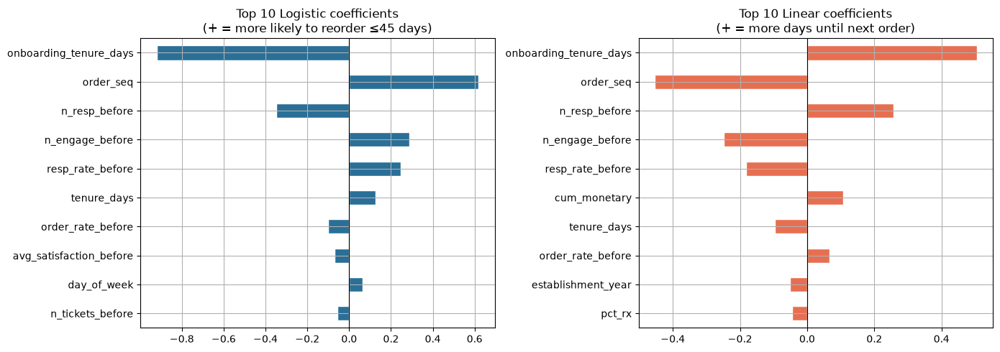
6.5 Evaluation Dashboard — ROC, Confusion Matrix & Regression Fit
Three diagnostic panels summarising both models on the test set (time-based, newest 20% of orders): the ROC curve for the classifier, its confusion matrix, and the regression’s predicted-vs-actual scatter.
from sklearn.metrics import f1_score
import matplotlib.pyplot as plt
import numpy as np
fig, axes = plt.subplots(1, 3, figsize=(18, 5))
# ---- Panel 1: ROC curve (Logistic) ----
fpr, tpr, _ = roc_curve(y_tec, proba)
auc = roc_auc_score(y_tec, proba)
axes[0].plot(fpr, tpr, color='#2A6F97', lw=2, label=f'Logistic (AUC={auc:.3f})')
axes[0].plot([0, 1], [0, 1], '--', color='grey', lw=1)
axes[0].set_title('ROC — predicting reorder ≤45 days')
axes[0].set_xlabel('False Positive Rate'); axes[0].set_ylabel('True Positive Rate')
axes[0].legend(loc='lower right')
# ---- Panel 2: Confusion matrix heatmap ----
cm = confusion_matrix(y_tec, pred_c)
f1 = f1_score(y_tec, pred_c)
axes[1].imshow(cm, cmap='Blues')
axes[1].set_title(f'Confusion Matrix (F1={f1:.2f})')
axes[1].set_xticks([0, 1]); axes[1].set_xticklabels(['Pred:No', 'Pred:Yes'])
axes[1].set_yticks([0, 1]); axes[1].set_yticklabels(['Actual:No', 'Actual:Yes'])
thr = cm.max() / 2
for r in range(2):
for c in range(2):
axes[1].text(c, r, f'{cm[r, c]}', ha='center', va='center',
color='white' if cm[r, c] > thr else 'black', fontsize=14)
# ---- Panel 3: Regression predicted vs actual ----
mae = mean_absolute_error(y_te, pred_reg)
axes[2].scatter(y_te, pred_reg, alpha=0.35, color='#2A9D8F', edgecolor='none', s=25)
lim = max(y_te.max(), pred_reg.max())
axes[2].plot([0, lim], [0, lim], '--', color='#A44A3F', lw=1.2)
axes[2].set_title(f'Regression: predicted vs actual (MAE={mae:.0f}d)')
axes[2].set_xlabel('Actual (days)'); axes[2].set_ylabel('Predicted (days)')
plt.tight_layout(); plt.show()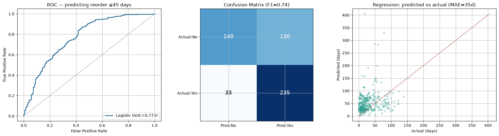
7. Presentation & Conclusion
Summary of findings, business recommendations, and honest acknowledgment of limitations.
7.1 Key Insights
onboarding_tenure_days and order_seq are the dominant signals in both models. How long a pharmacy has been registered in the system (from onboarding date to this order) and how many cumulative orders it has placed are the two strongest predictors. Pharmacies with a longer account history and a higher order count have established, predictable reorder cycles that the model can learn.
Marketing engagement shows a nuanced split. n_engage_before (total sales contacts) carries a positive coefficient in classification — more touchpoints correlate with sooner reorders. n_resp_before (actual pharmacy responses) carries a negative coefficient, suggesting pharmacies that respond repeatedly may be those that require more persuasion rather than those that reorder instinctively. Both signals confirm that the quality of engagement matters alongside volume.
Support tickets are a negative signal. n_tickets_before carries a negative coefficient — pharmacies that raise more complaints are less likely to reorder quickly, confirming that service quality has a direct impact on retention.
Regression outperforms the mean/median baseline by ~42% (MAE 35.0 vs 60.2 days). R²(log) = −0.606 — slightly negative on the log scale, confirming the relationship is nonlinear and a linear model captures only part of the pattern; on the day scale it is still a useful ranking signal (see the R² note in Section 6).
Classification achieves AUC = 0.773, with F1 = 0.74 for the positive class (reorder within 45 days). After applying the observation-horizon labelling rule (Section 4), the train/test base rates are aligned (28% vs 49%), so the test AUC and F1 are trustworthy estimates (see Section 6.3).
7.2 Business Recommendations
Early dormancy detection. Score each pharmacy weekly using the classification model. Pharmacies with low reorder-within-45-day probability that have already exceeded their average recency should be pushed to the sales rep call queue immediately — before they go dormant.
Personalized promotion timing. Use the regression model’s
days_until_next_orderestimate to send promotions a few days before the predicted reorder date, rather than broadcasting blindly.Prioritize high-value at-risk accounts. Rank pharmacies by
cum_monetary× (1 − reorder probability). High-spending pharmacies with declining order frequency deserve the most attention.Invest in service quality. The negative coefficient on
n_tickets_beforemeans reducing complaint volume directly improves retention — resolving Escalated tickets faster should be a priority.
7.3 Limitations & Future Improvements
Censoring & the observation horizon. Each pharmacy’s last order (~690) has no observed next order and is excluded from the regression; recent orders whose 45-day window has not yet elapsed are dropped from classification (labelled NaN, ~150). This is the correct way to avoid guessing labels, but it does discard information. Future work: survival analysis (e.g. Cox proportional hazards) can leverage censored observations without discarding them.
Never-ordered pharmacies excluded. 110 pharmacies with no purchase history are absent from the master table and cannot be scored by the model. A separate first-purchase propensity model, or demographic-based clustering, would be needed to target and activate these accounts.
Modest predictive power for exact timing. R²(log) is slightly negative (the exact reorder day is hard to predict), even though classification AUC = 0.773 is solid and regression MAE beats the baseline by ~42%. The linear/logistic constraint cannot capture nonlinear reorder dynamics; gradient boosting or time-series/survival models would likely improve exact-day prediction.
Simple imputation. Median imputation ignores group-level patterns. Group-wise imputation by region or credit_tier would be more accurate.
Validation. A single time-based split is used. TimeSeriesSplit cross-validation would give a more robust estimate of generalization error across different time windows.